In China Employee Termination in 2026: Decision-Tree Payroll Operating Model for Foreign Employers
Key takeaways
- For foreign employers in China, termination quality improves when payout decisions follow explicit branches, not one generic workflow.
- A three-branch decision tree (standard, contested, high-risk) reduces ambiguity in in-cycle vs off-cycle release.
- Evidence and approval minimums should determine payout scope, not deadline pressure.
- Role ownership across HR, payroll, manager, and vendor/EOR is required for defensible execution.
- Local interpretation differences should be treated as risk signals requiring confirmation before release.
Why a decision-tree format helps under payroll pressure
Termination cases often look similar on the surface but differ materially in risk. Some have complete records and clear approvals; others include disputed basis, missing files, or uncertain treatment details. When teams force all cases through a single process, they either over-process low-risk cases or under-control high-risk ones. Both outcomes are expensive.
A decision tree solves this by linking case conditions to processing actions. It answers three operational questions fast: what can be paid now, what must be escalated, and what evidence is still required. For multinational teams coordinating across time zones and functions, this structure improves speed without sacrificing control quality.
Decision-tree overview (three branches)
Branch A — Standard case
Conditions: clear legal basis, complete evidence, aligned approvals, no active dispute.
Processing: in-cycle release for approved components with standard reconciliation and closure controls.
Branch B — Contested case
Conditions: partial evidence gaps, communication mismatch risk, or unresolved component classification.
Processing: in-cycle only for uncontested components; contested items routed to controlled exception path.
Branch C — High-risk case
Conditions: disputed basis, unresolved treatment uncertainty, or escalation indicators from employee/management.
Processing: freeze contested items, trigger escalation protocol, and release only fully supported mandatory components as allowed.
Regulatory baseline (concise)
The Labor Contract Law provides the core framework for termination and compensation exposure. The Social Insurance Law supports obligations relevant to termination-month closure and related processing controls. Technical tax references provide context for treatment assumptions in final-pay components. Multinational employer analysis supports a process-discipline approach where evidence quality and governance are central.
What remains uncertain in practice is local implementation for edge cases and evidentiary thresholds. Decision-tree governance should therefore include explicit local confirmation points for uncertain items.
Branch-level operating rules
Branch A rules (standard)
- Verify basis code and evidence completeness.
- Confirm approvals in system.
- Release full approved in-cycle package.
- Complete post-run reconciliation and archive.
Branch B rules (contested)
- Split uncontested and contested components.
- Release uncontested approved items only.
- Route contested items to exception queue with owner and SLA.
- Communicate status clearly to affected employee.
Branch C rules (high-risk)
- Trigger escalation (HR compliance + payroll lead + legal channel).
- Freeze contested components from in-cycle run.
- Issue controlled interim communication.
- Process only components meeting strict minimum approval/evidence standards.
- Run mandatory post-incident review.
Ownership matrix
| Function | Core decision responsibility | Release responsibility | Escalation responsibility |
|---|---|---|---|
| HR | Basis integrity and case classification | Communication alignment | Trigger compliance escalation |
| Payroll | Component mapping and treatment notes | Run-scope enforcement | Reject unauthorized lock-window changes |
| Manager | Business rationale and support records | Confirm decision timing | Escalate unresolved business conflicts |
| Vendor/EOR | Local process feasibility | Filing/closure support | Flag local uncertainty and dependencies |
| Finance | Funding and ledger controls | Off-cycle authorization | Escalate high-cost deviations |
Evidence and approval minimums by branch
| Control item | Branch A | Branch B | Branch C |
|---|---|---|---|
| Basis documentation | Full | Partial allowed with mitigation | Full for released items only |
| Approval completeness | Full | Full for uncontested only | Full for any released component |
| Treatment note | Full | Full for released items | Full + local confirmation for uncertainties |
| Communication alignment | Required | Required with exception note | Required with escalation message |
| Archive readiness | Standard | Enhanced | Mandatory incident-grade |
Exception escalation playbook
- Detect branch trigger conditions.
- Assign branch classification and owner.
- Set payout scope based on branch rules.
- Execute communication template for branch status.
- Confirm unresolved technical/local items.
- Close with root-cause and preventive action log.
System implementation notes
- Mandatory branch field before release.
- Branch-specific approval workflows.
- Component-level payout scope tags.
- Immutable worksheet versioning.
- Exception dashboard by branch and aging.
- KPI reporting: Branch B/C frequency, off-cycle ratio, dispute initiation rate.
Common mistakes and prevention
- Mistake: treating all cases as standard.
Prevention: enforce branch assignment before payroll action.
- Mistake: releasing contested items to avoid delay.
Prevention: branch-based payout scope lock.
- Mistake: no explicit owner for contested case closure.
Prevention: assign exception owner with SLA.
- Mistake: escalation only after employee challenge.
Prevention: trigger escalation from branch conditions.
What to do now (10 actions)
- Add branch field to termination tracker.
- Publish branch criteria and examples.
- Build branch-specific approval workflows.
- Train HR/payroll on payout-scope rules.
- Standardize branch communication templates.
- Introduce exception owner/SLA controls.
- Track Branch B/C trend monthly.
- Require local confirmation for flagged uncertainties.
- Run quarterly branch simulation drill.
- Update decision tree after each major incident review.
What to watch next
Foreign employers should watch how local practice evolves for evidence sufficiency in termination disputes and administrative processing expectations. Decision trees should be reviewed periodically to reflect observed case patterns and local confirmation learnings.
FAQ
1) Why is a decision tree better than one checklist?
Because it adapts control intensity to case risk, reducing both overprocessing and under-control.
2) Can Branch B cases still be partly paid in-cycle?
Yes, but only for approved uncontested items under documented rules.
3) Who confirms branch assignment?
HR compliance and payroll lead jointly, with business owner input.
4) What if local treatment is unclear?
Escalate and confirm before release; do not process based on assumption.
5) Does this replace legal advice?
No. It is an operational framework and should be paired with local professional advice.
Disclaimer
This content is informational only and does not constitute legal, tax, or accounting advice. China employment implementation can vary by city and case facts. Employers should seek qualified local professional advice for case-specific decisions.
Sources
- National People's Congress. Labor Contract Law of the People's Republic of China. Official English text: http://www.npc.gov.cn/zgrdw/englishnpc/Law/2007-12/13/content_1384064.htm (accessed 2026-02-26).
- National People's Congress. Social Insurance Law of the People's Republic of China. Official English text: http://www.npc.gov.cn/zgrdw/englishnpc/Law/2009-02/20/content_1471106.htm (accessed 2026-02-26).
- PwC Worldwide Tax Summaries. People's Republic of China – Individual taxes on personal income. https://taxsummaries.pwc.com/peoples-republic-of-china/individual/taxes-on-personal-income (accessed 2026-02-26).
- Littler. Key Recent Developments in China's Employment Law: A China-U.S. Comparative Perspective for Multinational Employers. 2025-09-16. https://www.littler.com/news-analysis/asap/key-recent-developments-chinas-employment-law-china-us-comparative-perspective.
China-Payroll.com supports foreign employers with compliance-first EOR and payroll operations for termination workflows.
Need local employment support in China?
If you need a compliance-first partner for hiring, payroll, and risk controls in China, China-Payroll.com can help evaluate the right setup.
Image Prompt Pack
Create a 16:9 hero image for article title: 'In China Employee Termination in 2026: Decision-Tree Payroll Operating Model for Foreign Employers'. Scene: global operations team evaluating workforce model options for China market entry. Include motifs: decision …